Plataformas y suites para docentes
En esta página se recogen conjuntos de programas y de servicios que conviene conocer como un todo: las suites ofimáticas, una plataforma de servicios en línea, los formularios y encuestas y el aula virtual. Las actividades para Infantil y los primeros cursos de Primaria se tratan en «Aplicaciones para materias».

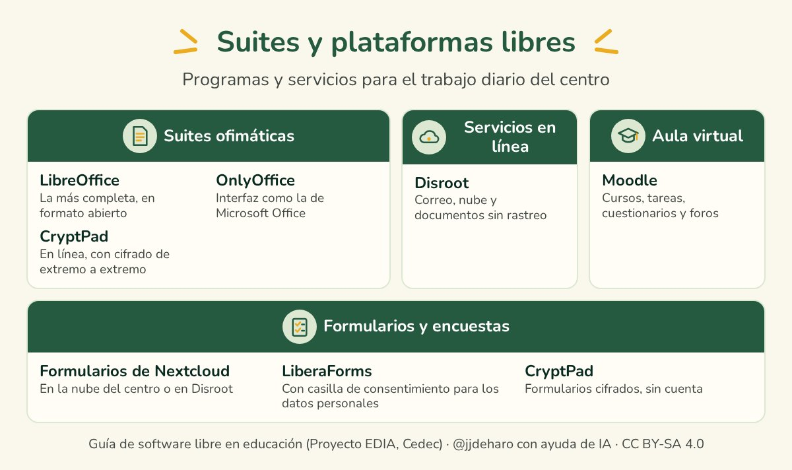
Suites ofimáticas
Una suite ofimática reúne los programas de uso diario en cualquier oficina: procesador de textos, hoja de cálculo y presentaciones. LibreOffice es la más conocida entre las libres, pero no la única, y todas abren y guardan los documentos de Microsoft Office.
LibreOffice
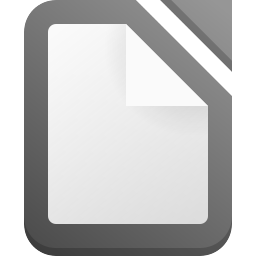
LibreOffice incluye procesador de textos (Writer), hoja de cálculo (Calc), presentaciones (Impress), dibujo (Draw), base de datos (Base) y editor de fórmulas (Math). Nació en 2010 como continuación de OpenOffice.org, la suite libre que durante años fue la principal alternativa a Microsoft Office, y hoy publica dos versiones al año.Guarda los documentos en el formato abierto ODF, que es una norma internacional, y abre y guarda también los de Microsoft Office. Funciona en GNU/Linux, Windows y Mac.

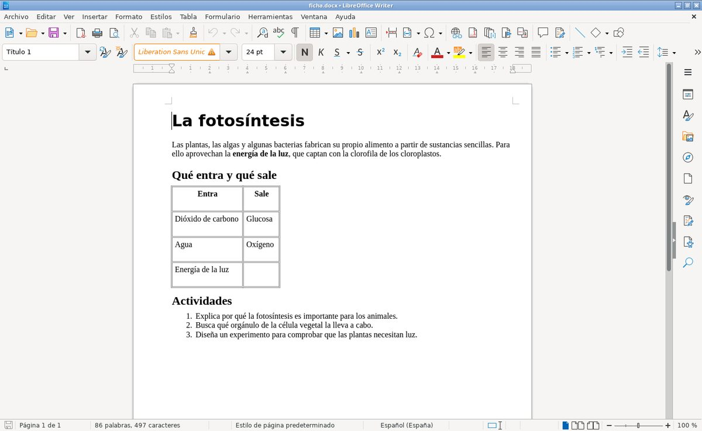
OnlyOffice
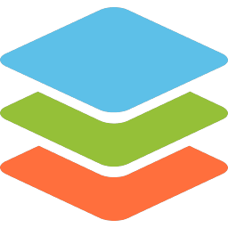
OnlyOffice tiene procesador de textos, hoja de cálculo, presentaciones y editor de formularios y de PDF, con una interfaz muy parecida a la de Microsoft Office. Lo desarrolla Ascensio System SIA, una empresa con sede en Riga (Letonia), con licencia AGPL.La versión de escritorio es gratuita para GNU/Linux, Windows y Mac. La empresa vende además un servicio en línea, aunque el servidor de documentos puede instalarse en el propio centro siguiendo su documentación.

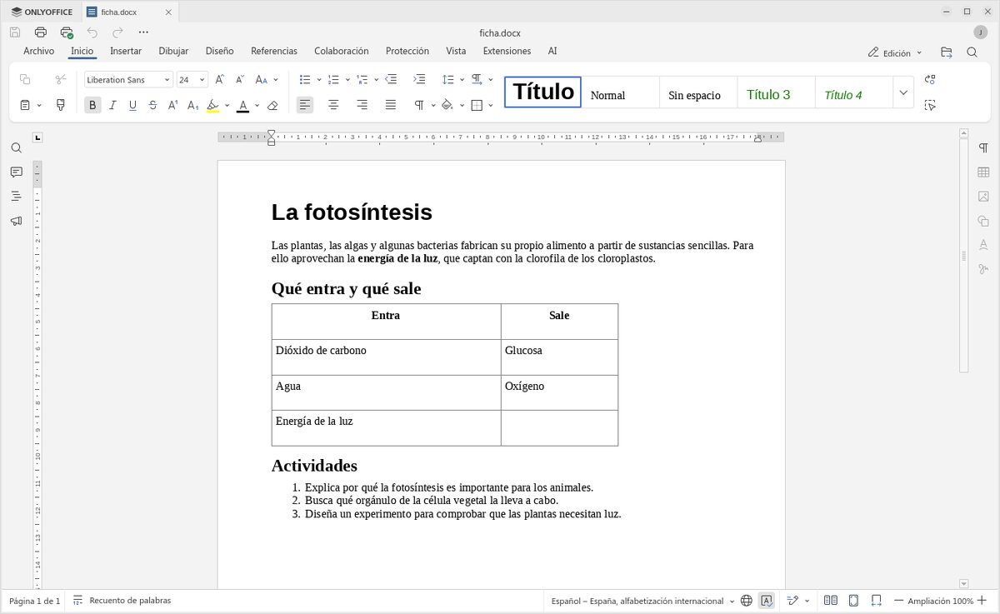
CryptPad
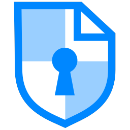
CryptPad es una suite en línea que cifra los documentos en el propio navegador, antes de enviarlos al servidor, de modo que ni siquiera la organización que mantiene el servidor puede leerlos. Ofrece documento, hoja de cálculo, presentación, texto enriquecido, código, formulario, kanban, diagrama y diapositivas en Markdown.Se puede usar sin registrarse, y con una cuenta gratuita en cryptpad.fr se dispone de 1 GB para guardar los documentos. Cómo se trabaja en él con otras personas a la vez se explica en «Colaboración y gestión del aula».

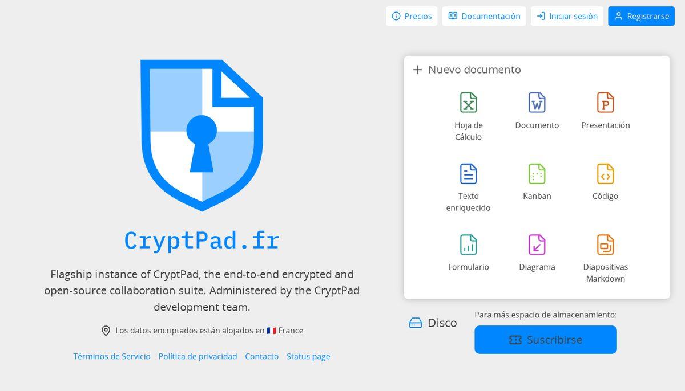
Plataformas de servicios en línea
Una plataforma de servicios en línea agrupa bajo una misma cuenta el correo, el almacenamiento en la nube y otras herramientas, como hacen los servicios de Google o de Microsoft, pero sin rastreo ni publicidad.
Disroot
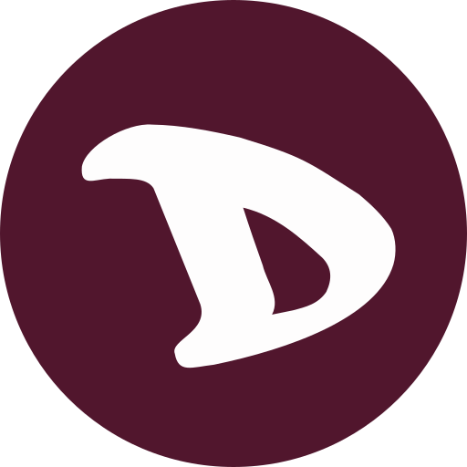
Disroot es un proyecto nacido en Ámsterdam en 2015, sostenido por voluntarios y por las donaciones de las personas que lo usan, que ofrece servicios basados en software libre. Con una cuenta se dispone de correo (1 GB), una nube Nextcloud (2 GB) con calendario y contactos, mensajería XMPP y un gestor de contraseñas. Sin registrarse pueden usarse documentos compartidos, CryptPad, un buscador que no rastrea y un servicio para enviar archivos cifrados.Hay que tener en cuenta que su web está solo en inglés y que las cuentas nuevas se aprueban a mano, por lo que el alta puede tardar.

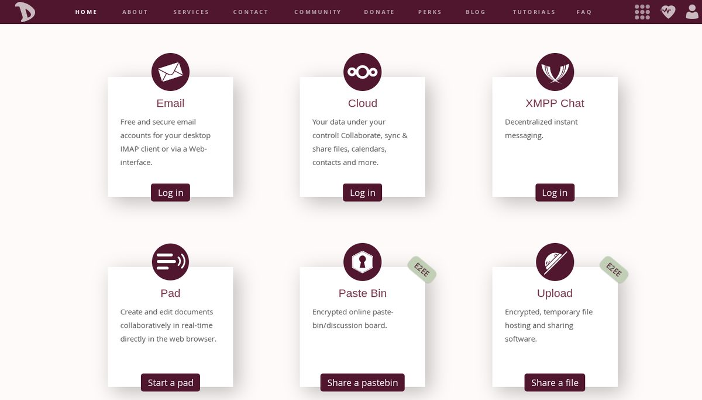
Formularios y encuestas
Los formularios sirven para recoger a la vez las respuestas de muchas personas: una autorización de las familias, una encuesta al alumnado o una inscripción. El servicio más usado para esto es Google Forms, que no es software libre y guarda las respuestas en los servidores de Google. En las alternativas libres que siguen, quien responde no necesita cuenta.
CryptPad, presentado en «Suites ofimáticas», también crea formularios sin cuenta y con las respuestas cifradas. Y quien ya trabaja con un aula virtual Moodle, que se presenta más abajo, dispone de sus actividades Consulta, Encuesta y Retroalimentación sin salir de ella.
Formularios de Nextcloud
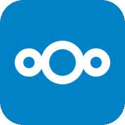
Formularios de Nextcloud es la aplicación de encuestas y cuestionarios de Nextcloud, la nube libre que se presenta en «Herramientas para la privacidad y la seguridad». Admite preguntas de respuesta corta o larga y de opción única o múltiple, entre otros tipos, y cada formulario se comparte con un enlace que se puede responder sin cuenta. Las respuestas se ven resumidas por pregunta, con porcentajes, y se descargan en CSV, ODS o XLSX.Se usa desde una nube Nextcloud ya existente: la del centro o la de la administración educativa, si la ofrecen, o la gratuita de Disroot, que se describe más arriba. Tiene licencia AGPL.

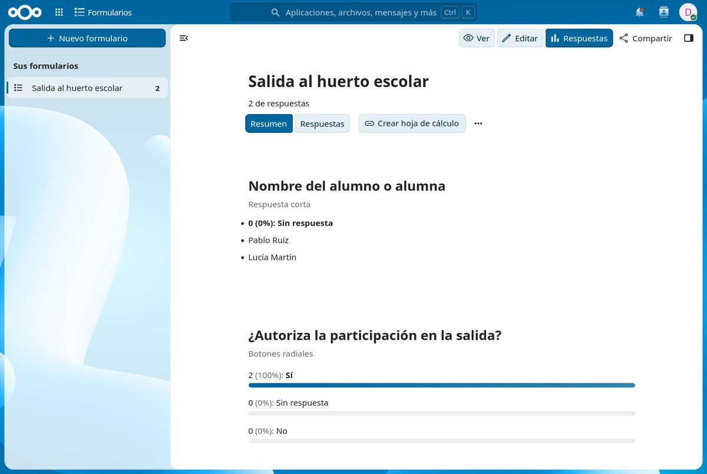
LiberaForms
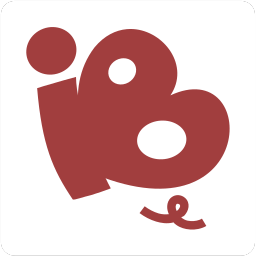
LiberaForms es un programa libre de formularios pensado para respetar los derechos digitales de quienes responden. Si un formulario pide datos personales, obliga a añadir una declaración de privacidad y una casilla de consentimiento, y ofrece un asistente para redactarla. Las respuestas se consultan en tabla, en tarjetas o en gráficos, y se exportan en CSV, JSON o PDF.Hay instancias públicas en las que cualquiera puede abrir una cuenta gratuita con su correo, como My LiberaForms, con un límite de respuestas al año. La interfaz está en castellano, catalán, gallego y euskera, entre otras lenguas, y el código tiene licencia AGPL.

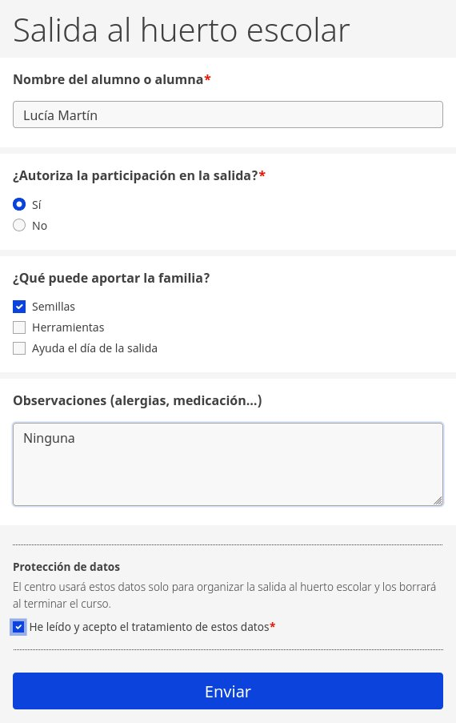
Sistemas de gestión de aprendizaje
Un sistema de gestión de aprendizaje, o aula virtual, organiza los cursos con sus materiales y actividades y lleva el seguimiento del alumnado. Moodle es el más extendido, y la mayoría de las administraciones educativas españolas lo ofrecen a sus centros.
Moodle
Moodle reúne en cada curso los materiales, las tareas, los cuestionarios y los foros, y registra las calificaciones. Admite además los paquetes creados con otras herramientas, como los de eXeLearning o H5P. Se instala en un servidor, así que no es un programa para el ordenador personal.
Para crear cursos abiertos sin servidor propio, OpenLearn Create, de la Open University, ofrece espacio gratuito basado en Moodle.

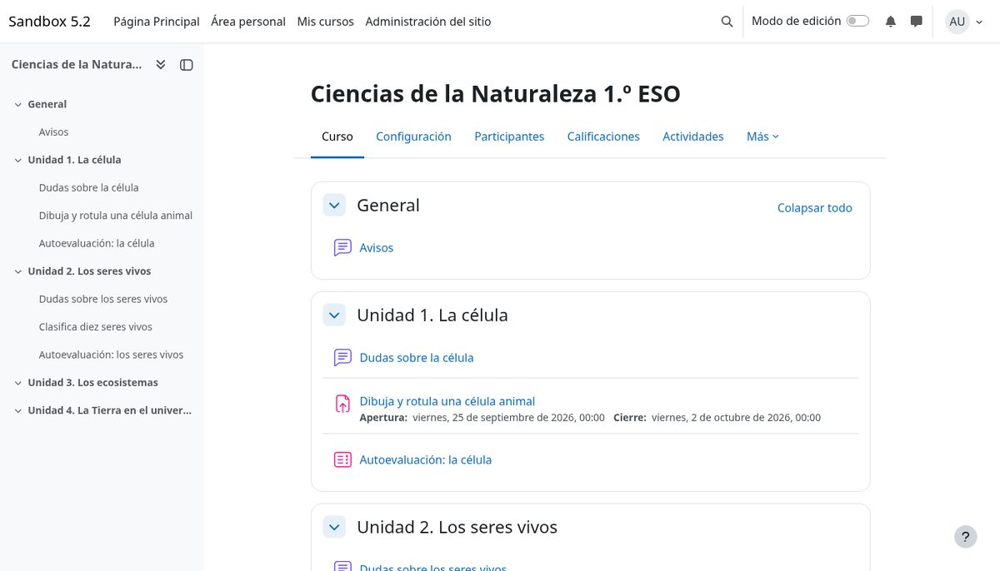
Para saber más:
- Documentación de Moodle, la ayuda oficial en español.
- Grupo de Telegram sobre Moodle, donde se resuelven dudas.